dissipates
dissipates Derivation of 
Charging: the supply delivers
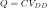
at voltage , energy ; the capacitor stores
, energy ; the capacitor stores 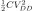
; the other half is dissipated in the PMOS (any resistance: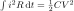
for an RC charge). Discharging: the stored is dissipated in the NMOS. Per cycle; with transition probability  (0→1 transitions per clock),
(0→1 transitions per clock), 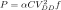
.Other components
- Short-circuit: both devices on while
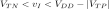
;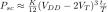
(Veendrick) — small if input and output edges are similar (Veendrick 1984). - Leakage: subthreshold, gate tunnelling, junction:
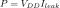
, exponential in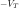
and in temperature.
Reduction techniques
| technique | acts on |
|---|---|
| lower V_DD (DVFS) | V² (and f) |
| clock gating | α |
| smaller capacitance, sizing | C |
| power gating, multi-V_T | leakage |
| parallelism at lower V_DD | V² at same throughput |
Worked example
Chip with
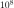
gates, average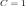
fF,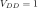
V,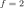
GHz,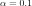
: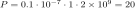
W. Lowering to 0.8 V: 12.8 W (−36%). An inverter driving 100 fF at 2.5 V and 100 MHz with 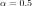
: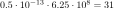
µW; Energy per full cycle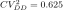
pJ, i.e.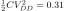
pJ per transition — the power–delay product of this gate.Engineering applications
Pitfall
is defined in different ways (per clock cycle, 0→1 only, or any transition); with "any transition" the formula becomes
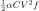
. State the convention.